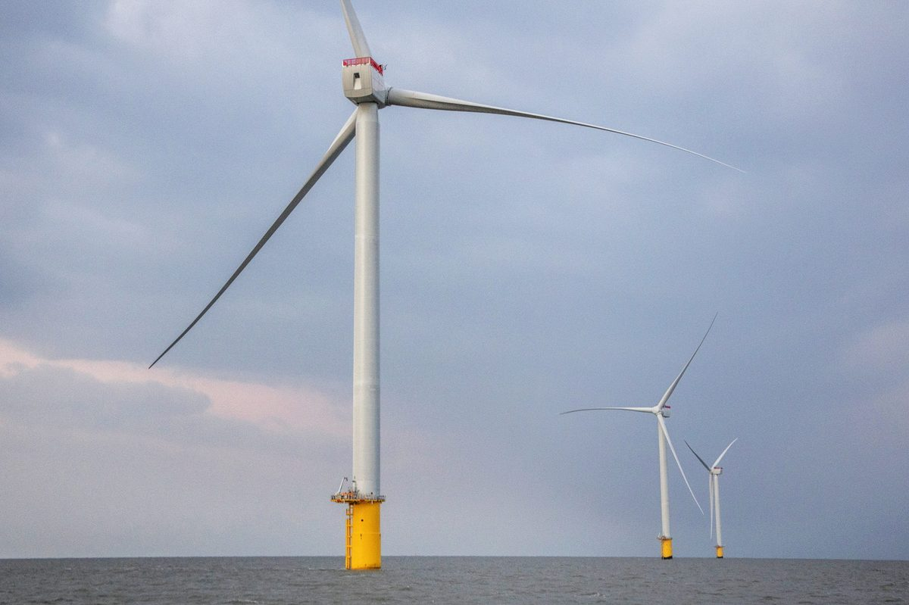

재생에너지 설비 90% 이상 민간 소유…전력연맹 사무처장, 발전공기업이 확대 이끌어야

2024년 9월 국회 기본사회포럼 토론회…해상풍력 발전사업허가 83건 중 77건 해외자본·대기업
남태섭 전력연맹 사무처장은 2024년 9월 19일 국회 의원회관에서 열린 기본사회포럼 토론회 '에너지전환과 공유부 기본소득'에서 재생에너지 확대를 발전공기업이 이끌어야 한다고 주장했다. 그는 제11차 전력수급기본계획이 설비가 늘어난다는 전망만 담고 누가 소유·운영할지는 다루지 않았다며, 국내 태양광·풍력 설비의 90% 이상이 민간 소유이고 해상풍력 발전사업허가 83건 중 77건을 해외 금융자본과 대기업이 갖고 있다고 설명했다. 석탄발전은 발전공기업이 90%를 갖고 있는데 새 재생에너지는 민간이 차지하는 흐름을 그는 "전기에너지의 민영화"라고 표현했다. 대안으로 균등화발전비용이 공공 쪽이 더 낮다는 근거를 들어 발전공기업 중심의 확대와 전기요금 정상화, 발전 5사 통합을 제안했다.
시민에너지 관점
해상풍력 허가 83건 중 77건이 해외 금융자본과 대기업 몫이라는 숫자는 재생에너지 시대의 핵심이 설비 용량이 아니라 소유 문제라는 점을 분명히 보여 준다. 공공 소유를 늘리자는 주장은 민영화를 막는 한 방법이지만, 발전공기업만 주체로 두면 지역 주민은 여전히 이익 밖에 남을 수 있어 보인다. 덴마크 미델그룬덴처럼 시민협동조합과 공공이 지분을 나눠 갖는 방식은 공공성과 지역 소유를 함께 잡는 길이다. 누가 소유하느냐는 질문에 공기업과 시민이 함께 답하는 제도 설계를 서둘러야 한다.
그래서 어떻게 할 것인가. 국회와 정부는 발전공기업 중심의 확대나 발전 5사 통합을 논의할 때, 공기업 사업에 주민·시민 협동조합이 지분으로 들어올 수 있는 비율을 함께 정해야 한다. 해상풍력 발전사업허가 단계에서는 해외 금융자본이나 대기업 사업에도 지역 주민 몫을 조건으로 거는 방안을 검토할 수 있다. 시민 협동조합은 공기업과 손잡는 공동 사업 모델을 먼저 제안하고, 노동계·시민사회와 함께 '누가 소유하느냐'를 전력수급기본계획의 논의 항목으로 올리도록 요구할 수 있다.
출처: 매일노동뉴스 2024-09-19 강석영 원문 보기
再エネ設備の90%以上が民間所有…電力連盟事務処長「発電公企業が拡大を主導すべき」
2024年9月の国会基本社会フォーラム討論会…洋上風力の発電事業許可83件中77件が海外資本・大企業
ナム・テソプ電力連盟事務処長は、2024年9月19日に国会議員会館で開かれた基本社会フォーラムの討論会「エネルギー転換と共有富の基本所得」で、再生可能エネルギーの拡大は発電公企業が主導すべきだと主張した。ナム氏は、第11次電力需給基本計画は設備が増えるという見通しを示すだけで、誰が所有・運営するかには触れていないと指摘し、国内の太陽光・風力設備の90%以上が民間所有で、洋上風力の発電事業許可83件のうち77件を海外の金融資本と大企業が持っていると説明した。石炭火力は発電公企業が90%を保有しているのに、新たな再エネは民間が占めていく流れを、ナム氏は「電気エネルギーの民営化」と表現した。代案として、均等化発電原価は公共側の方が低いという根拠を挙げ、発電公企業中心の拡大と電気料金の正常化、発電5社の統合を提案した。
市民エネルギーの視点
洋上風力の許可83件のうち77件が海外の金融資本と大企業のものだという数字は、再エネ時代の核心が設備容量ではなく所有の問題であることをはっきり示している。公共所有を増やそうという主張は民営化を防ぐ一つの方法だが、発電公企業だけを主体にすれば、地域住民は依然として利益の外に置かれかねないとみられる。デンマークのミドルグルンデンのように市民協同組合と公共が持ち分を分け合う方式は、公共性と地域所有を両立させる道だ。誰が所有するのかという問いに、公企業と市民がともに答える制度設計を急ぐべきである。
では、どうすればよいか。国会と政府は、発電公企業中心の拡大や発電5社の統合を議論する際、公企業の事業に住民・市民協同組合が持ち分として加われる比率をあわせて定めるべきだ。洋上風力の発電事業許可の段階では、海外の金融資本や大企業の事業にも地域住民の取り分を条件として課す案を検討できる。市民協同組合は公企業と手を組む共同事業のモデルを先に提案し、労働界・市民社会とともに「誰が所有するのか」を電力需給基本計画の議題に載せるよう求めることができる。
出典: Maeil Labor News 2024-09-19 Kang Seok-young 原文を読む
韩国九成以上太阳能和风电设备为民间所有，电力工会联盟主张由发电国企主导扩大
2024年9月国会基本社会论坛研讨会：83件海上风电发电许可中77件属外资和大企业
2024年9月19日在国会议员会馆举行的基本社会论坛研讨会“能源转型与共有财富基本收入”上，韩国电力产业工会联盟事务处长 Nam Tae-seop 主张应由发电国企主导可再生能源的扩大。他指出，第11次电力供需基本计划只包含设备增加的预测，并未涉及由谁拥有和运营；韩国太阳能和风电设备90%以上已为民间所有，83件海上风电发电许可中有77件由海外金融资本和大企业持有。他把燃煤发电90%由发电国企持有、而新增可再生能源却由民间占据的趋势称为“电力能源的民营化”。作为替代方案，他以公共部门平准化发电成本更低为依据，提出以发电国企为中心扩大可再生能源、电价正常化以及整合五家发电公司。
市民能源视角
83件海上风电许可中有77件归海外金融资本和大企业所有，这一数字清楚表明，可再生能源时代的核心不是装机容量，而是所有权问题。扩大公共所有是防止民营化的一种办法，但如果只把发电国企作为主体，当地居民似乎仍可能被排除在利益之外。丹麦米德尔格伦登那样由市民合作社与公共部门分享股权的方式，是兼顾公共性与地方所有的道路。应尽快设计让国企和市民共同回答“由谁拥有”这一问题的制度。
那么，该怎么做？国会和政府在讨论以发电国企为中心扩大可再生能源或合并五大发电公司时，应同时规定居民和市民合作社可以入股国企项目的比例。在海上风电发电许可阶段，也可以研究把当地居民份额作为海外金融资本和大企业项目的附加条件。市民合作社可以率先提出与国企合作的共同项目模式，并与劳动界和市民社会一起，要求把“由谁拥有”列入电力供需基本计划的讨论议题。
来源: 每日劳动新闻 2024-09-19 Kang Seok-young 查看原文
Over 90% of Korea's solar and wind assets privately owned; power union official urges state generators to lead
September 2024 National Assembly forum: 77 of 83 offshore wind generation licenses held by foreign capital and large firms
At a Basic Society Forum debate on "energy transition and commons-based basic income" held at the National Assembly on September 19, 2024, Nam Tae-seop, secretary general of the Korean federation of power industry unions, argued that state-owned generators should lead renewable expansion. He said the 11th Basic Plan for Electricity Supply and Demand projected more capacity but did not address who would own and operate it, noting that over 90% of Korea's solar and wind assets are privately owned and 77 of 83 offshore wind generation licenses are held by foreign financial capital and large companies. He called the shift, in which state generators own 90% of coal power while new renewables go to private hands, "the privatization of electricity." As alternatives, citing lower levelized costs for public projects, he proposed expansion centered on state generators, normalizing power prices and merging the five generation companies.
Citizen Energy View
That 77 of 83 offshore wind licenses belong to foreign financial capital and large companies makes clear that the core issue of the renewable era is ownership, not capacity. Expanding public ownership is one way to prevent privatization, but if state generators are the only owners, local residents appear likely to remain outside the benefits. Models like Denmark's Middelgrunden, where a citizens' cooperative and a public utility share the equity, offer a path that secures both public interest and local ownership. Rules that let public companies and citizens answer the ownership question together should be designed without delay.
So what should be done? When the National Assembly and the government discuss expansion led by public generators or the merger of the five generation companies, they should also set the share that resident and citizen cooperatives can take as equity in public projects. At the offshore wind licensing stage, a local residents' share could be considered as a condition even for projects held by foreign financial capital and large corporations. Citizen cooperatives could propose joint project models with public companies, and together with labor and civil society call for the question of who owns the plants to be placed on the agenda of the Basic Plan for Electricity Supply and Demand.
Source: Maeil Labor News 2024-09-19 Kang Seok-young Read the original